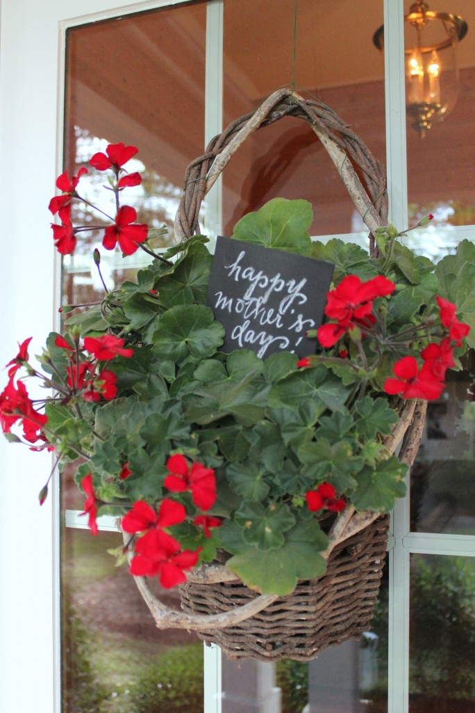
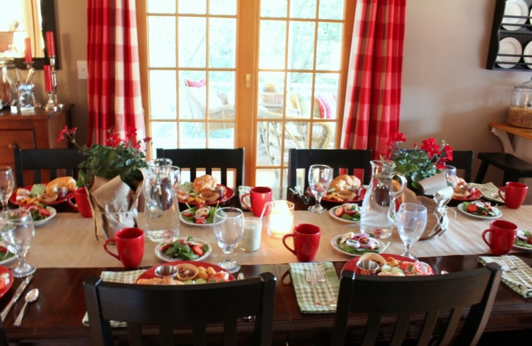

.png)
.PNG)
.PNG)
.PNG)
.PNG)
.PNG)
.JPG)
.JPG)
.PNG)
.PNG)


It started at the front door with the red geraniums in the basket.
And then it proceeded into the dining room.  The red buffalo checked drapes and the red plates have returned. 🙂  I have been living in the land of green and yellow for a couple of months, so I felt happy to be surrounded by red again.  I mixed in the green checks and plaids with the napkins, and I used the red mugs for serving soup.
When I called my parents to invite them to come to dinner for Mother’s Day, they accepted and my father asked what we would be eating.  “Sissy food,” I told him. “There will be no steaks or burgers. This meal is in honor of ladies, so you will have to eat girl’s food. 🙂 ” (And he did, along with the other 8 guests at the table.)  Here was our menu.

 I had my daughter make a trip to Fresh Market for the pimento cheese, soups, and the cheese straws. The shrimp were steamed at our local Kroger store.
I made all the sandwiches and salads from scratch, and the pecans were simply toasted in a pan with butter and salted.
Definitely girl food! Â The geraniums were gifts for both my mother and my mother-in-law. Â Each held a gift card as well.
I had planned to eat outside on the porch, but summer seems to be making a fast arrival here. Â It was 90 degrees at 6 o’clock, and the boys did not want to sit out in the heat. Â So we ate in the dining room, but by the time dessert rolled around, the temperature had dropped, and it was very comfortable out there.
A build-your-own-shortcake bar was set up on the table out there from which to serve. Â I made two pound cakes: Â a chocolate one and a sour cream one. Â We cut up several fruits…peaches, blackberries, and strawberries and layered them with sugar, and of course there was freshly whipped cream.
To serve, everyone just helped themselves to whatever combination they wanted.  The next time I do this,  I am going to put a pitcher of milk on the table because everyone seemed to want a glass a milk with their dessert! 🙂
(Of course I chose the chocolate cake for my dessert!)
I also enjoyed some sweet gifts for the day…gift cards for dinner and a movie from my husband, and fresh flowers and the gifts you see below from our children. Â Those books have been on my wish list for a very long time, so I was super excited to get them!
And that was my Mother’s Day – another special day filled with food (sissy food!), family, and fellowship. Â I hope your weekend was a good one too! Â I loved loved all your stories and comments on the last post and will try to get replies back to them next weekend. Â We have less than 10 days of school left in our school year and the mad end-of-year testing and paperwork is in full swing, so replying to comments and emails will probably be delayed for the next couple of weeks – but I am reading everything that comes through here! Â Just wanted to let you know. Okay?
So… how did you spend your weekend?


.PNG)
Can I ask you, how do you get such great pictures of the FOOD when you have a dinner/party? At my house everyone wants to dig right in and gets annoyed when I am trying to take pictures. UGH. Your menu sounds fabulous!
———————————————————————-
My crew is very patient with me – all except for my dad. When he is here, I am lucky to get any photographs! I use a tripod, and my family and friends just wait a few minutes for me to take photos…and they all know to turn off the overhead lights when I am doing it. (They shouldn’t complain…they’re getting free food, right? LOL) My family has even gotten used to my photographing their meals in restaurants. (And with smartphones and all, it seems to be the norm lately that many folks are taking pictures of their food.)
Kelly
I am seeing your beautiful home for the first time today!! Very gorgeous!! I have red and pink through-out my home. It is a very small condo that my daughter Debbie, (she has Downs Syndrome), and I have just moved into. Trying to find room for everything has taken me longer than usual!! So loved your Mother’s Day dinner. It looked just wonderful and inviting. The food sounded delish also!! Looking back at your Christmas decor since I’m a crazy for Christmas kind of girl!! Will enjoy following your site!!
————————————————————————
Welcome Sandra! I am so glad you found the blog. Good luck getting everything in place in your new condo. Moving is A LOT of work!! Thank you for the compliment on our Mother’s Day meal. I think “girl-y food” is probably my favorite food category. LOL (I always loved weddings because the receptions had the best things to eat!) If you love Christmas you will enjoy the December posts since I am also addicted to the season….waaay too much holiday decor around here then. (And can you believe Hobby Lobby already has Christmas items out??)
Hope you will visit again when you get a break from unpacking. 🙂
Kelly
I really enjoyed reading about and seeing all the pretty pictures of your Mothers Day feast. I just love sissy food! I wanted to tell you I almost lost your blog. For the past several weeks I have noticed I haven’t been getting my emails from the bloggers I followed. I remember Kim at Southern Savvy Style telling everyone they just needed to sign up at Bloglovin’ if they were still having problems. Well, I did . Then I couldn’t remember which ones I followed and it was driving me crazy. I remembered your name but not the name of your blog. AFter some research I found it and I am now signed up through bloglovin’ so I hope I never miss another post by you. Yours was not the only blog that wasn’t getting to me and I don’t know what the problem was but hopefully its fixed. Missed you ☺ Keep up the good work!
——————————————————————–
Thank you Lynne. I am so glad you started following through Bloglovin. I agree with Kim that is the only way to keep up right now. Google and Yahoo have a new policy that is killing emails from third party senders (like our Feedburner delivery service) before it even gets sent out. It doesn’t go to spam. They just refuse to send it. So that is why so many blogs are having such trouble getting posts to their email subscribers. There really isn’t anything that we as bloggers can do about it unfortunately. I have been told to go to a paid publishing company, but since I do not make any money on the blog, going to a paid publishing company isn’t something that fits in my budget. Plus I have heard that some of them are running into the same problem with email subscriptions. I hope that something will be done about the policy so that all of this is fixed. In the meantime, please keep reading at Bloglovin. 🙂
Kelly
Kelly, I love your blog and so look forward to it. But…..I am no longer getting my feed burner email subscription. Any idea of what I should do?
———————————————————————-
Sherry, the only thing I know that you can do right now is follow through Bloglovin (or just check on the site every day or so.) Yahoo implemented a DMARC policy about a month ago that is refusing to send out the Feedburner email notices to anyone with a yahoo email address. It also affects hotmail and some others as well. (This is a super huge problem all over blog land.) I don’t foresee it getting “fixed” either. Once I am out for the summer, I am going to see what I can do to change my delivery service. It is looking like a paid service may be the only solution, and the only way I can afford to do that is to make some money through advertising on the blog. I hate that this has happened, and it is frustrating for everyone, but thank you for letting me know.
Kelly
You had me at Red & Green! I do love your decorating touch. How in the world do you find time to teach, blog, decorate, cook and then run a house and be a great mom??? I am really impressed. I know that blogging takes a lot of time and preparation and so does teaching. You have several full time jobs!!!
What a lovely Mother’s Day you had! We ate out, but I am hoping that someday my daughter will cook (sissy) food for me 🙂
Kelly, I love the red and your scrumptious “girly” foods. Enjoy reading your blog. Oh, how I remember this time of the year with field trips, field days, state tests, and meetings and more meetings. Bring on summer break! My husband and I retired two years the end of May. We may no longer be in the classroom, but we oversee our two grand children’s homework throughout the week.
Kelly,
Your Mother’s day meal looks divine! I love all of those foods. this weekend my husband tackled my to do list around the house. It was wonderful. We planted more in our garden, power washed the front porch, back porch, screened in deck and garages. He mowed, trimmed and ran the weed eater. I cooked and baked. He and my daughter woke me up on Sunday with a new Keurig machine that make frothy cappuccinos! Then they took me out to lunch. We had grilled shrimp kabobs, spinach strawberry salad, cold pasta salad and pie for dinner with our parents over. I was such a productive and wonderful weekend. I have 7 days of school of left and it is a whirl wind of activity around here too. Thanks for sharing your Mother’s day with us. I might have to try to Strawberry Shortcake bar next year!
Mmmm…your menu looked yummy. After church my husband went to Tennessee and picked up his mom. Then he took me, my mom and his mom to a wonderful dinner at a restaurant called Square Root. Our kids met us back at the house for dessert…so good…the fudge pie in May’s Southern Living magazine with vanilla gelato. My son’s gift was a pottery bird feeder and my daughter gave me “The Southerner’s Handbook..A Guide to Living a Good Life” by Garden & Gun.
Hope you are marking those days off the calendar, Kelly….’Round about this time, I could always start seeing the light at the end of the tunnel!
Hi Kelly,
What a delightful looking table! And such fun with all the delish girly food (I’m sure all the men secretly looked forward to it!).
My son took me out for breakfast at a local Dutch pancake house which specializes in stuffed pancakes. We had some fantastic mixtures… the favourite being banana and bacon topped with Nutella!
All the best
Cath
Happy Mother’s Day Kelly…everything was beautiful as usual!
Looks absolutely perfect! I am always amazed at the number of items you put on a menu for only a few people. All those choices would have worked for a group of 30! I don’t know how you do it. Seriously — and you have a very busy teaching career and your blog. Do you ever sleep?
Well Kelly, you weren’t the only one who brought out the red. My Saturday brought work of bringing out all the iron furniture with red cushions and umbrella, (from Target). Smiles…Oh, Target! We normally open the pool, but chose to wait a week. I worked all day spreading shredded mulch, prepping hanging baskets and a little planting of red and white impatiens in a few pots and urns. Oh, I was so enjoying a glass of wine and soaking sore joints in the hot tub by nightfall. Best investment we have made. Sunday brought sunny skies again and a quiet wake up of coffee and just a sweet roll out on the deck. It was lovely. Then by early afternoon it was off to my parents home nearby for a three hour visit that brought a four generation picture of my mom, myself, 2nd daughter and my granddaughter. My mom is 88 and dad 89, so they don’t like to go out much. We had planned to cook out, but dinner time brought rain so there was no grilling of the chicken shish kabobs. Change of plan here too Kelly. My husband had just bought a ham on sale so he made the family a baked ham with beans and mashed potatoes. Yeah, it was like Easter again, but I didn’t care as long as I wasn’t cooking. The two young ones gave a flower arrangement, two Smith & Hawkins wicker votive candles (Target). Got some new boxwoods for the outbuilding from the hubs. A necklace from my married one and lunch out yet to come with my Chicago girl. Such a busy but very content weekend. As I type this I am listening to thunder, lightening and we are in to two inches of rain so far…not good. I am glad I didn’t do a bunch of flowers yet. I am fearful that I will be redoing the few pots I just did, UGH!!! Take care. Teachers always have so much to do. I don’t know how you do it, but thank you. I so enjoy your blog Kelly.
Debra
Very nice table and the “sissy” food looks delish. Last week we came back from a little trip to Las Vegas (we needed to feel some warmth on our bodies:))! The day after our return, I took a flight to visit my mother for a few days, then we returned home for mother’s day, where I was greeted with lovely flowers and a dinner. The weather is trying to get warmer, but I think the snow is done for now. Enjoy your new books!
Yay for you, getting Gil Schafer’s and Thomas Keller’s books. What a perfect gift, to sit on your porch and savor them, along with your candy. Your sissy food looks so light and refreshing – perfect for a hot day.
My Mother’s Day gift was a day of shopping without the kids, which meant I could make more than 3 stops. Looking for cute summer skirts– even though we still have 17 school days to go….
You have the most beautiful home. It is my favorite of any that I visit on blogs. Beautiful colors and so homey! Do you mind me asking your square footage? My family is planning to downsize in the next year or so. We currently have 4,100 sq ft and our kids are in college so it is a little too big for us. 🙂
Kelly,
I love the touches of red and the geraniums are so summery. I had to laugh, one of my sons gave me the Gil Shaferbook, which had been on my amazon wish list for over a year. Don’t you love it?
The menu looked great. I was treated to a great lunch prepared by our California son and his sweet bride.
xo,
Karen
Kelly,
I loved, loved, LOVED all your Mother’s Day goodies–especially the girl food! Yum! You always have such great ideas!
I spent most of my Mother’s Day recuperating from my daughter’s college graduation. It was such a wonderful day, but it sure tuckered me out! We also had SNOW yesterday, so I just felt like hibernating. I usually plant flowers on Mother’s Day but not this year!
We’re on the countdown too–only 7 1/2 more days of school! Whoo hoo!